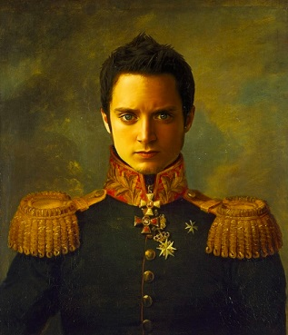
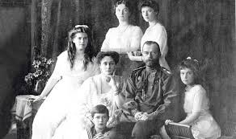

The eldest son of a peasant family, Pavel Michailovitch Kousmichoff left home at the age of 14 to look for an employment in St Petersburg. There he found work as a delivery boy for a tea merchant. The shop manager soon realized that the boy had enormous potential and taught him the art of blending tea. Pavel continued to work for the tea merchant until his marriage to Alexandra, the daughter of a successful paper merchant. His employer was so happy to see him marry into such a good family that he gave him a small teahouse on Sadovaïa Street. And that is how the P. M. Kousmichoff teahouse started in 1867.
Alexandra gave him six children, including his son Viatcheslav (1878) and his daughter Elisabeth (1880) for whom he created the special blend that soon became the tsar's tea, Bouquet de Fleurs. By 1901 Pavel owned 11 teahouses as well as a large building big enough for his entire family. He was very rich and his company was one of the three largest tea companies in Russia..
In 1907, he sent his eldest son to London to learn about tea. Viatcheslav started by opening the company's British subsidiary, P.M. Kousmichoff and Sons at 11, Queen Victoria Street. At the time, the City was the world capital of the tea trade, which helped Viatcheslav to become a master tea blender. Viatcheslav returned to Russia and after the death of his father in 1908 took over the family business. He successfully built up the company to own a total of 51 teahouses in all major cities of Russia. 
In 1916, sensing disaster, Viatcheslav transferred part of his fortune to the company's London office and in 1917 opened a workshop in Paris, the Maison Tea Time . While he spent most of his time in Paris, his family remained in Saint Petersburg and on the eve of the Revolution, without realizing how right his instincts were, he decided to send them spend the summer in the Caucasus just as the Revolution broke out. As the Reds moved south Viatcheslav organized his family's escape, first to Constantinople and then to Paris in 1920. 
In Paris, Viatcheslav and his wife lived the life of the wealthy with their three children, Constantin, Nadia and Vera. The children had tutors and enjoyed sport and music, Constantin and Nadia playing the violin and Vera the piano. Vera attended the Paris Conservatory where she met Rachmaninov and went on to become a famous opera singer.
The family prospered during the interwar years, opening offices in New York , Hamburg and Constantinople . However, Viatcheslav decided to settle his main business in Berlin since there was a large Russian community there. Viatcheslav Kousmichoff died just after World War II in 1946 leaving his son Constantin to take over a family business much weakened by the war years. But Constantin didn't have the same business acumen as his father or grandfather. He was a man who loved life and burned the candle at both ends. An artist and a tea lover, he just didn't understand figures. On the brink of bankruptcy in 1972 he sold the business for a pittance.During the years that followed, the Kousmichoff company continued to sell Tea Time teas with uneven success. Like Constantin, the people who had bought the company were artistic and had a certain understanding of flavors, but their management skills left a lot to be desired.
In 2003, Kousmichoff was bought by the Orebi brothers who came from a long line of commodity merchants. Having traded cotton in the 19th century, non-ferrous metals in the first part of the 20th century, the Orebi family decided in 1962 to focus on cocoa and coffee‚ a move that naturally led them to tea. They took up the challenge to carry on the traditions of Pavel, Viatcheslav and Constantin Kousmichoff and to develop an international reputation for the Tea Time Tea brand.